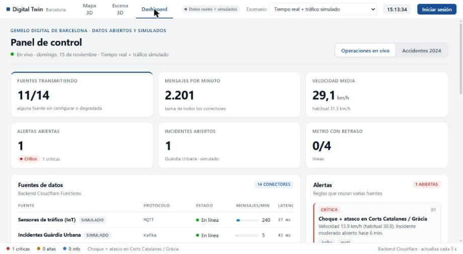

- Ciudad en 3DEdificios, relieve del ICGC, ortofoto, metro, árboles y puerto como capas que se encienden y apagan sobre el mapa.
- Trenes y balizas realesPosición de los trenes de Rodalies y balizas V16 encendidas, leídas de los datos abiertos de Renfe y la DGT.
- Alertas con reglasUna regla cruza varias fuentes. Por ejemplo, velocidad baja más un incidente abierto en el mismo cruce dispara una alerta crítica.
- EscenariosLluvia fuerte, viento de 65 km/h o un choque en Corts Catalanes con Gràcia, para ver cómo reacciona el sistema.
- Recogida de residuosNivel de llenado por contenedor, planificación de rutas de recogida e indicadores, servidos por una API propia en .NET.
- Urgencias con BIMAmbulancias en ruta hacia el Hospital Clínic, con las bahías de urgencias leídas de un modelo IFC abierto en el navegador.
- Reportes ciudadanosCualquier persona con sesión iniciada puede marcar una incidencia en el mapa y adjuntar una foto.
- Panel de controlResumen de operaciones en vivo y análisis de los accidentes de 2024 frente a la lluvia.
41.3874° N · 2.1686° E · proyecto personal · 2026
Gemelo Digital de Barcelona
Una plataforma web que reúne en un mapa 3D lo que está pasando en la ciudad: trenes, tráfico, meteorología, accidentes, residuos y urgencias. Mezcla datos abiertos reales con sensores simulados, y cruza todo con reglas para generar alertas.

14fuentes de datos conectadas
7.495contenedores reales de la ciudad
7.536accidentes de 2024 (Guàrdia Urbana)
~75trenes de Rodalies seguidos en vivo
Qué hace
Cómo está montado
Conectoresuno por protocolo
→
Bus normalizadomismo formato para todos
→
Reglascruzan fuentes
→
Alertas y rutasmapa y panel
Cada fuente entra por un conector que traduce su protocolo a un mensaje común. Las reglas trabajan solo sobre ese mensaje, así que cambiar un conector simulado por el driver real no obliga a tocarlas.

Fuentes de datos
| Protocolo | Qué trae | Origen |
|---|---|---|
| GTFS-RT | Trenes de Rodalies de Catalunya (Renfe) | Real |
| DATEX II | Balizas V16 conectadas (DGT 3.0) | Real |
| REST | Lluvia, viento y temperatura (Open-Meteo) | Real |
| REST | Reportes ciudadanos con foto | Real |
| REST · ASP.NET Core | Llenado de contenedores, sobre ubicaciones reales de OpenStreetMap | Simulado |
| MQTT | Sensores de tráfico por zona | Simulado |
| Kafka | Incidentes de la Guàrdia Urbana | Simulado |
| WebSocket | Telemetría de trenes de metro | Simulado |
| PROFINET | PLC de las grúas del puerto | Simulado |
| PROFIBUS DP | Ventilación de túneles (CO) | Simulado |
| LoRaWAN | GPS de ambulancias | Simulado |
| IFC4 | Modelo BIM de ejemplo del muelle de urgencias | Ejemplo |
| NGSI-v2 · FIWARE | Context Broker para smart city | Preparado |
| SQL | Histórico y línea base de velocidades | Preparado |
Es una demo. Los conectores simulados generan mensajes con la forma real de cada protocolo (topic de MQTT, partición y offset de Kafka, esclavo de Profibus), pero los valores son inventados. Los accidentes de 2024 y los contenedores son datos abiertos reales.
Tecnología
- Frontend
- React, Three.js y MapLibre. Modelos IFC abiertos en el navegador con WebAssembly.
- Backend
- Funciones serverless en Cloudflare para los conectores y las reglas.
- API de residuos
- C# con ASP.NET Core (.NET 10) y Entity Framework Core sobre SQL Server y PostgreSQL. Panel web MVC con Razor.
- Calidad
- Pruebas con xUnit y documentación OpenAPI.
- Despliegue
- Cloudflare Pages desde GitHub, y la API en IIS con HTTPS.
Quién lo ha hecho
Soy Christian Abad Santos, desarrollador full stack y Técnico Superior en Desarrollo de Aplicaciones Multiplataforma. Vivo cerca de Barcelona. He hecho este proyecto por mi cuenta para aprender cómo se construye un gemelo digital de ciudad de principio a fin, y busco trabajo en el sector de gemelos digitales, BIM y smart cities.